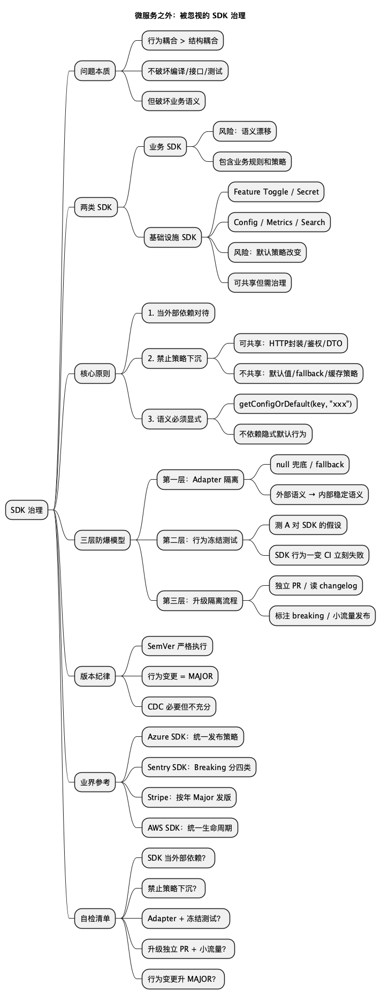

微服务之外：被忽视的 "SDK 治理"
Posted on Sat 28 February 2026 in Tech • 3 min read
| Abstract | 微服务之外：被忽视的 "SDK 治理" |
|---|---|
| Authors | Walter Fan |
| Category | tech note |
| Status | v1.0 |
| Updated | 2026-02-28 |
| License | CC-BY-NC-ND 4.0 |
微服务之外：被忽视的 "SDK 治理"
微服务架构里，我们很熟悉这些事：API 版本管理、Contract Testing、灰度发布、服务网格、降级与熔断。但有一个地方事故频率很高，却很少被系统讨论：SDK 治理。
本文讨论的 SDK 既包括业务 SDK，也包括基础设施 SDK（Feature Toggle、Secret、Config、Metrics、Search 等中间件客户端）。后者风险相对可控，但并非零风险，同样需要治理。
一次看起来再普通不过的升级：
B SDK: 1.2.3 → 1.3.0
没有接口变更、没有编译错误、CI 全绿。上线后却出了大事。原因往往只是一条：未配置的键以前返回默认值，新版本返回 null。这不是 API 变更，而是 语义变更（Behavioral Change）。这类事故的本质，是 缺乏 SDK 治理体系。
一、问题的本质：行为耦合
很多团队共享 SDK，是为了复用 client 调用、DTO，甚至一部分业务逻辑。当共享的不只是 "接口定义"，而是 "带策略的代码" 时，关系就变成了：
A 服务 → 依赖 → B 服务的行为
也就是 Behavioral Coupling（行为耦合）。
行为耦合比结构耦合更危险：它不会破坏编译、不会破坏接口、甚至不会破坏测试，但会破坏业务语义。
二、业务 SDK 与 基础设施 SDK
如果不是 "业务 SDK"，而是 Feature Toggle SDK、Secret SDK、Search SDK、Config SDK、Metrics SDK 这类基础设施 SDK，是不是就可以放心共享？答案是：风险会小很多，但并不是零风险，照样要按 SDK 治理来管。下面分几块说。
2.1 业务 SDK vs 基础设施 SDK 的本质区别
业务 SDK：包含业务规则、策略决策，语义强依赖具体场景，容易行为耦合。风险主要来自语义改变。
基础设施 SDK（中间件 SDK）：如 Feature Toggle、Secret、Search、配置中心、Metrics。特点是通用能力、无业务策略、语义更稳定，关注技术行为而非业务含义。风险主要来自技术行为改变（timeout、retry、cache、默认值）。两种风险性质不同。
2.2 基础设施 SDK 真的安全吗？
举几个身边的例子。
- Feature Toggle SDK：若 SDK 把 "未配置 flag → 默认 true" 改成 "默认 false"，接口和结构都没变，生产事故立刻发生。
- Secret SDK：若改动缓存时间、过期刷新机制、fallback 策略，可能导致密钥过期、调用失败、流量雪崩。
- Search SDK：若改动默认分页大小、排序、超时、分词策略，编译和测试可能都通过，线上却出现数据异常。
虽然不牵涉到具体业务, 可是由于功能比较通用, 使用范围和频率都比较高, 所以一旦出现问题, 影响面比较大, 事故频率比较高.
2.3 大公司为什么允许共享中间件 SDK？
一般得满足三条：语义高度稳定、策略高度可配置、不嵌入业务规则。这三条是关键。
2.4 成熟公司对基础设施 SDK 的要求
- SDK 是 "薄客户端"：只做网络调用、序列化、认证、连接池；不做默认策略、fallback 决策、业务转换、隐式行为。
- 所有默认行为必须显式配置：例如不要
new FeatureClient()，而要new FeatureClient(defaultValue=false, timeout=200ms, retry=2)。任何默认策略改变必须是 Major 版本。 - SDK 行为必须冻结测试：SDK 仓库里得有默认 flag 行为、timeout、fallback、null 行为等测试，否则 CI 不让发版。
- 重大版本升级必须广播：发布升级指南、标注 breaking change、提供迁移说明。
2.5 为什么基础设施 SDK 风险更可控？
因为它是 "技术抽象层" 而不是 "业务抽象层"。例如 HTTP client、Database client、Redis client：你不会担心 Redis SDK 改变 "业务规则"，但会担心默认连接池、超时行为改变——这是可预期风险。
2.6 风险排序（从高到低）
| 类型 | 风险等级 |
|---|---|
| 共享业务策略 SDK | 🔴 极高 |
| Feature Toggle / Secret SDK | 🟠 高 |
| Search SDK | 🟡 中 |
| 纯 HTTP Client | 🟢 低 |
| 底层网络库 | 🟢 很低 |
不是因为技术不同，而是 "默认行为影响范围" 不同。 通用的, 共享的, 相对稳定不变的, 才有必要做成 SDK, 而业务层面的东西, 由于需求, 场景, 策略, 决策等变化, 很难做成 SDK, 效果也不好.
2.7 核心结论
基础设施 SDK 可以共享，但必须满足：只共享 "能力"，不共享 "决策"。要是 SDK 里头偷偷做决策（默认开功能、默认 fallback、默认缓存、默认吞错误），就是在往 "策略 SDK" 滑，风险会很快上来。
2.8 真正成熟的做法
成熟点的组织一般是：共享基础设施 SDK、client 封装、OpenAPI/Protobuf；不共享业务规则；各服务自己定策略。再配上版本治理、行为冻结测试、升级闸门。说白了，SDK 治理就是微服务治理往 "库" 上延伸一步。
2.9 小结
业务 SDK 的危险在 "语义漂移"；基础设施 SDK 的危险在 "默认策略变了"。两者都不是零风险：一个伤业务自治，一个伤系统稳定。
三、Contract Testing 能解决吗？
像 Pact 这样的 Consumer-Driven Contract Testing 很有价值，能抓住字段删除、类型变化、状态码改变、Schema 不兼容。但它默认保护的是 HTTP Contract，不是 SDK 内部策略。
如果 SDK 改了默认值、fallback、重试、缓存、异常处理方式，Contract Testing 多半抓不到。所以：CDC 必要，但不充分。
四、SDK 治理的核心原则
原则一：把 SDK 当成 "外部依赖"
哪怕是内部团队写的。心里得当成 "这是一个可能随时改行为的外部系统"，而不是 "自家人写的，肯定稳"。
原则二：禁止 "策略逻辑" 下沉到 SDK
可以共享：HTTP 调用封装、鉴权逻辑、DTO、序列化处理。
不要共享：默认值策略、fallback 策略、缓存策略、业务判断、容错规则。策略属于业务语境，业务语境不应该跨服务传播。
原则三：语义必须显式
不要依赖 SDK 默认行为。不要写 sdk.getConfig(key)，而要：
sdk.getConfigOrDefault(key, "xxx")，或sdk.getConfig(key, timeout=3s, retry=3)
默认值是事故源头。
五、三层 SDK 防爆模型
如果仍然要共享 SDK，可以建三层防御。
第一层：Adapter 隔离层
服务 A 永远不直接使用 SDK：
A Service → Adapter → B SDK
Adapter 负责 null 兜底、fallback、异常转换、语义统一，用意就是把外部语义转成你服务内部能依赖的稳定语义。
第二层：语义锁定测试（Behavior Freeze Test）
测的不是 SDK 本身，而是 A 对 SDK 的假设。例如：
@Test
void missingKeyShouldReturnDefault() {
assertEquals("default", configAdapter.get("missing"));
}
SDK 行为一变，CI 立刻失败，比 CDC 更精准。
第三层：升级隔离流程
SDK 升级必须：独立 PR、读 changelog、标注是否 breaking、全量测试、小流量发布。禁止 "顺手升级"。
六、语义变更 = Major 版本
SemVer（MAJOR.MINOR.PATCH）得严格执行。行为一变就升 MAJOR，否则治理等于没建。
七、SDK 的组织级治理机制
很多团队会建一套：SDK 变更 RFC、Breaking Change 审核、行为冻结测试、消费方自动回归流水线、灰度 + Canary。和微服务治理是一类事，只不过治理对象从 "服务" 换成了 "库"。
八、业界与开源可参考
业界和开源社区有不少写进文档的 SDK 治理实践，和本文主张的 "行为即契约、显式语义、Major 才 breaking" 是一路的，需要时可以对标。
- Azure SDK：多语言统一发布策略，强制要求 Changelog + Migration Guide；新标准升级必须提供按语言的迁移指南和 "Benefits" 说明。Policies: Releases、General Implementation 里对实现细节（错误处理、配置、可观测性）有明确约定，相当于把 "薄客户端 + 可预期行为" 写进规范。
- Sentry SDK：把 breaking 分成四类——API 表面变更、产品侧影响（告警/分组/洞察）、行为变更（如 trim 上限、配额）、版本支持废弃；要求 breaking 只能进 Major，且必须带迁移指南（含 before/after 示例），必要时提供 codemod。Breaking Changes Playbook 可直接当 "是否算 breaking、怎么发版" 的检查清单用。
- Stripe：SDK 严格跟 SemVer，Major 对应 breaking（必填参数、类型/方法重命名等）；API 版本按月发布无 breaking，每年两次 Major 带 breaking，方便下游规划升级。Versioning and support policy、Changelog 按版本和日期组织，便于 "读 changelog 再升级"。
- AWS SDK：多语言统一生命周期（GA → Maintenance → End-of-Support），Major 发布后旧版有明确维护期和终止时间；同时提供 "智能默认配置" 模式（如 in-region / cross-region），但文档和版本化这些默认值，避免静默改行为。Maintenance policy。
共性三条： - breaking 只进 Major 并写进流程； - 每次大版本都有 Changelog + 迁移指南（或升级说明）； - 默认行为要么显式配置、要么在文档里写死并随版本演进。和你自己建 "升级闸门、语义锁定测试、显式默认" 是一套思路。
九、更深一层的架构问题
SDK 里一旦带了业务逻辑，微服务边界就已经被削了一块。理想情况是： - 共享 API 定义、 - 不共享业务逻辑、 - 服务间走 HTTP/RPC、 - 用 Contract Testing 保接口稳定。
现实里共享 SDK 往往是效率和治理之间的妥协，得心里有数：这是架构上的 trade-off，不是纯技术题。
十、总结
一句话：微服务要治理，SDK 也要治理。
共享 SDK 本身没问题，问题出在：共享策略、隐式语义、默认行为、升级没纪律。成熟做法不是 "别共享"，而是：共享范围收窄、语义显式、语义锁定测试、升级设闸门、版本守规矩。这套建起来，SDK 才从事故源变成可控的工程资产。
Checklist（SDK 治理自检）
- [ ] 是否把 SDK 当 "外部依赖" 对待（含内部团队提供的）？
- [ ] 是否禁止把默认值/fallback/缓存/业务判断下沉到共享 SDK？
- [ ] 调用方是否用 Adapter 隔离，并做语义锁定测试？
- [ ] SDK 升级是否独立 PR、读 changelog、全量测试、小流量发布？
- [ ] 行为变更是否一律升 MAJOR，并走 Breaking Change 审核？
- [ ] 若为基础设施 SDK：是否薄客户端、默认行为显式配置、行为冻结测试、重大升级广播？
References
- Pact - Consumer-Driven Contract Testing
- Semantic Versioning 2.0.0
- Azure SDK - Policies: Releases
- Azure SDK - General Implementation
- Sentry SDK - Breaking Changes Playbook
- Stripe - SDK versioning and support policy
- AWS SDKs - Maintenance policy
思维导图
@startmindmap
title 微服务之外：被忽视的 SDK 治理
* SDK 治理
** 问题本质
*** 行为耦合 > 结构耦合
*** 不破坏编译/接口/测试
*** 但破坏业务语义
** 两类 SDK
*** 业务 SDK
**** 风险：语义漂移
**** 包含业务规则和策略
*** 基础设施 SDK
**** Feature Toggle / Secret
**** Config / Metrics / Search
**** 风险：默认策略改变
**** 可共享但需治理
** 核心原则
*** 1. 当外部依赖对待
*** 2. 禁止策略下沉
**** 可共享：HTTP封装/鉴权/DTO
**** 不共享：默认值/fallback/缓存策略
*** 3. 语义必须显式
**** getConfigOrDefault(key, "xxx")
**** 不依赖隐式默认行为
** 三层防爆模型
*** 第一层：Adapter 隔离
**** null 兜底 / fallback
**** 外部语义 → 内部稳定语义
*** 第二层：行为冻结测试
**** 测 A 对 SDK 的假设
**** SDK 行为一变 CI 立刻失败
*** 第三层：升级隔离流程
**** 独立 PR / 读 changelog
**** 标注 breaking / 小流量发布
** 版本纪律
*** SemVer 严格执行
*** 行为变更 = MAJOR
*** CDC 必要但不充分
** 业界参考
*** Azure SDK：统一发布策略
*** Sentry SDK：Breaking 分四类
*** Stripe：按年 Major 发版
*** AWS SDK：统一生命周期
** 自检清单
*** SDK 当外部依赖？
*** 禁止策略下沉？
*** Adapter + 冻结测试？
*** 升级独立 PR + 小流量？
*** 行为变更升 MAJOR？
@endmindmap

本作品采用知识共享署名-非商业性使用-禁止演绎 4.0 国际许可协议进行许可。